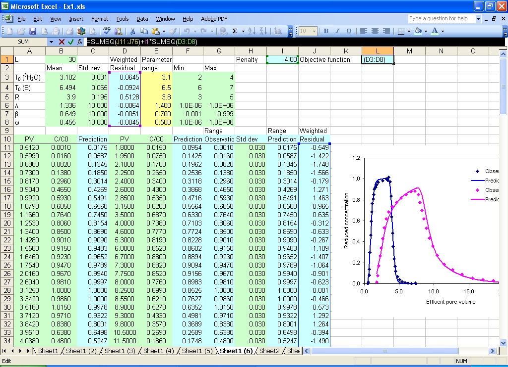
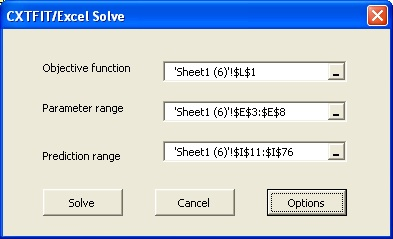
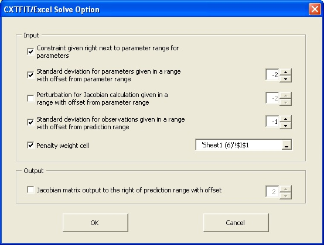
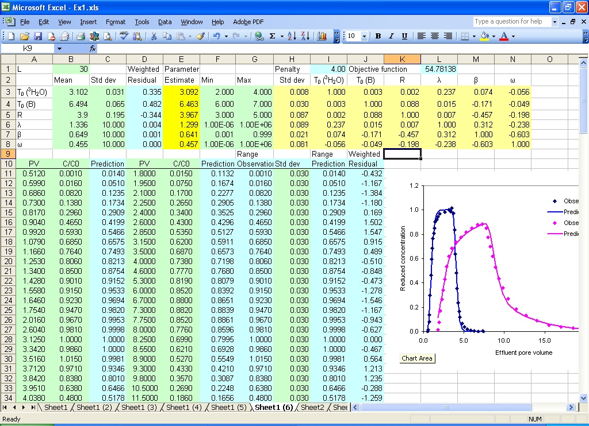

Section 8: Weighted Least Squares with Penalty Function
Suppose that the chemical analytical error is 0.03 for 3H2O and 0.05 for B, the measurement error for pulse is 1% for both tracers, and the uncertainty in retardation factor is 5% of the mean for B. Assume that we do not have a direct measurement for dispersivity, mobile water fraction, and mass transfer coefficient; we use a large uncertainty for these parameters. Then we can redo the parameter estimation in Section 3 with the weighted least squares method with penalty function to incorporate the measurement error for concentration observations as well as experiment conditions (pulse, retardation factor).- Make a copy of sheet Sheet1 (2) and re-organize the new sheet as shown in Fig. 8.1
- Open Solve dialog and Solve Option dialog to solve the problem

Fig. 8.1 Setup to incorporate measurement error for parameter estimation
Since pulse and retardation factor are usually sensitive parameters, their uncertainty is not ignored when they are included for parameter estimation. The mean, standard deviations, and estimates for adjustment for the parameters are given in B3:B8, C3:C8, and E3:E8. The weighted residuals are given in D3:D8 with formula =(B3-E3)/C3 for cell D3.
The observations for both tracers are moved into column G, and the standard deviations for observations are given in column H. The weighted residuals are calculated in column J with fomula =(G11-I11)/H11 for cell J11.
The formula for the objective function is =SUMSQ(J11:J76)+I1*SUMSQ(D3:D8) in cell L1 with cell I1 as the penalty cell.
Select menu CXTFIT->Solve... to open CXTFIT/Excel Solve dialog.
Select the objective function cell, parameter range, and prediction range as shown in Fig. 8.2.

Fig. 8.2 Solve dialog
Click Option button to open the Solve Option dialog, make sure the options are selected as shown in Fig. 8.3.

Fig. 8.3 Solve Option dialog
Click OK button to close Solve Option dialog, click Solve button to solve the problem.
The parameter estimates are updated in the parameter range (E3:E8), the standard deviations and correlation matrix are output in H3:N8 (Fig. 8.4).

Fig. 8.4 Estimation results using weighted least squares with prior information included as penalty
Note that the values for observation and prior parameter estimates are hypothetical. Nevertheless, the option to include this information can be useful when measurement errors are reliably quantified.